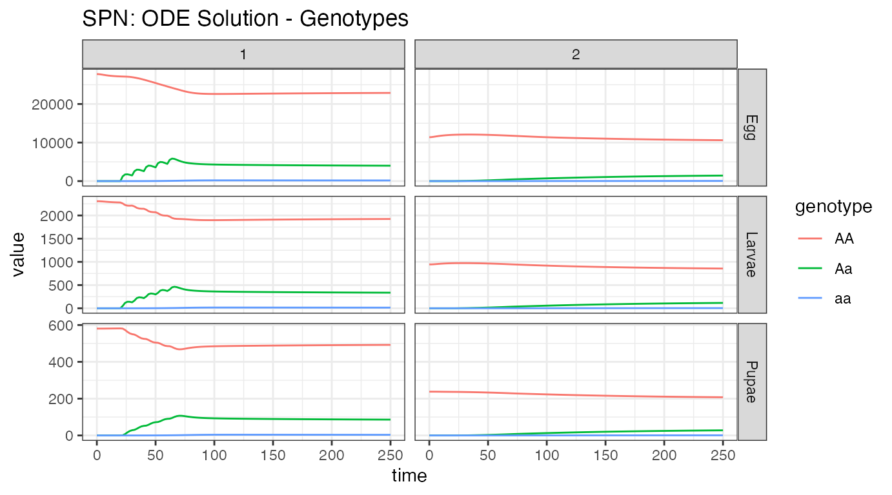
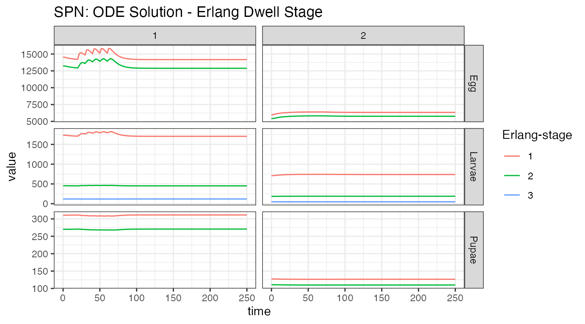
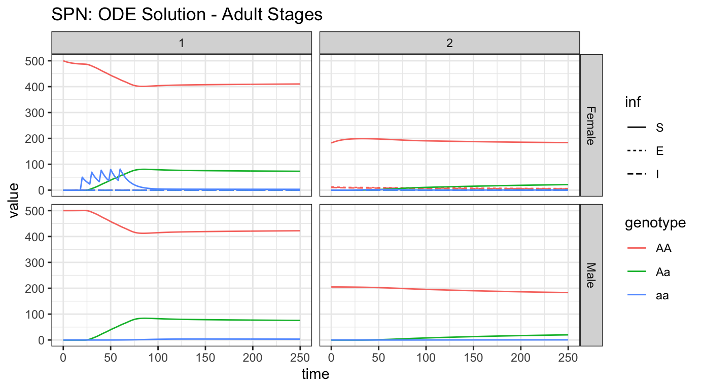
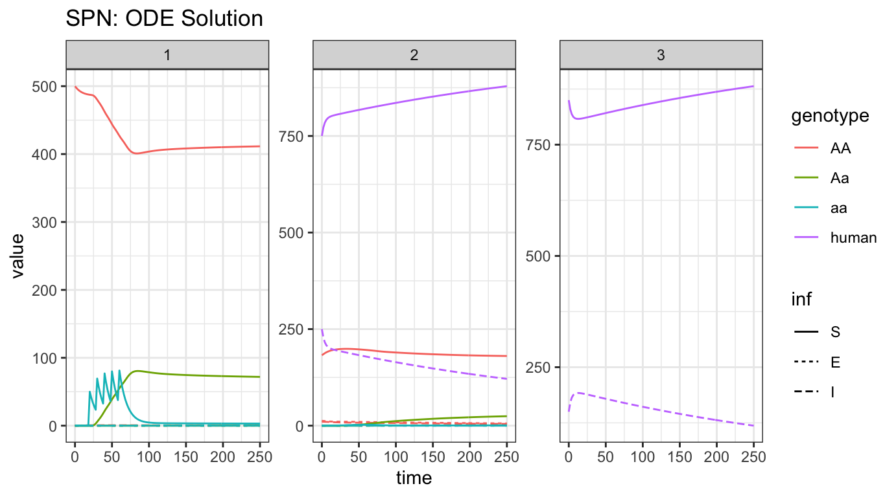
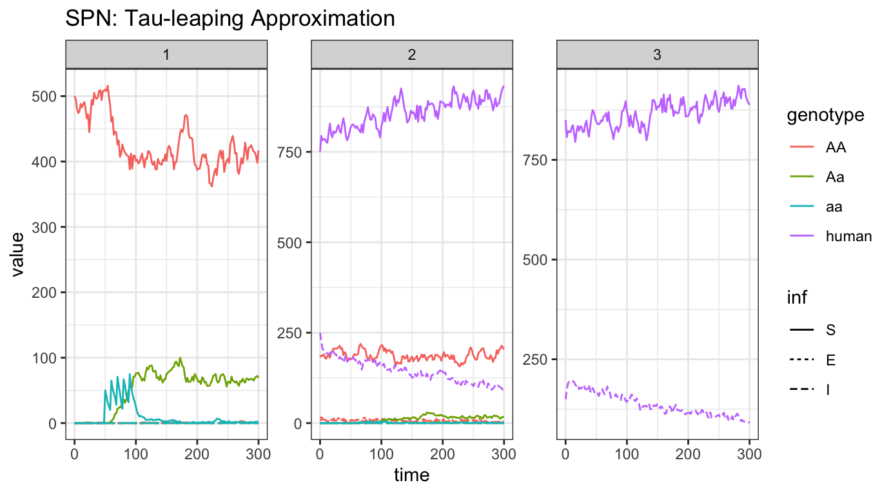

epi-network.RmdThis vignette describes how to use the facilities provided by MGDrivE2 to run simulations of joint gene drive and epidemiological (specifically an SIS model) dynamics on metapopulation networks; nodes may contain humans only (such as high altitude regions), mosquitoes only (such as uninhabited swamp), or humans and mosquitoes (inhabited regions with breeding mosquito populations). Infection events (mosquito to human or human to mosquito) can only occur in nodes where both humans and mosquitoes are allowed to interact. For more information on how these models are coupled, see the “MGDrivE2: One Node Epidemiological Dynamics” vignette.
We start by loading the MGDrivE2 package, as well as the MGDrivE package for access to inheritance cubes, ggplot2 for graphical analysis, and Matrix for sparse matrices used in migration. We will use the basic cube to simulate Mendelian inheritance for this example.
# simulation functions
library(MGDrivE2)
#> Loading MGDrivE2: Mosquito Gene Drive Explorer Version 2
# inheritance patterns
library(MGDrivE)
#> Loading MGDrivE: Mosquito Gene Drive Explorer
# plotting
library(ggplot2)
# sparse migration
library(Matrix)
# basic inheritance pattern
cube <- MGDrivE::cubeMendelian()Before setting up the simulations, we define the parameters used to calculate equilibrium populations and generate hazards during the simulation. We define the list of entomological and epidemiological parameters, theta. For a table of epidemiological parameter descriptions, see the “MGDrivE2: One Node Epidemiological Dynamics” vignette.
The chunk of code below defines parameters used to setup the Petri Net and for calculating the equilibria and initial conditions.
Additionally, we specify a total simulation time of 300 days, and to demonstrate additional functionality, we store output every other day.
# entomological and epidemiological parameters
theta <- list(
# lifecycle parameters
qE = 1/4,
nE = 2,
qL = 1/3,
nL = 3,
qP = 1/6,
nP = 2,
muE = 0.05,
muL = 0.15,
muP = 0.05,
muF = 0.09,
muM = 0.09,
beta = 16,
nu = 1/(4/24),
# epidemiological parameters
NH = 1000,
X = 0.25,
f = 1/3,
Q = 0.9,
b = 0.55,
c = 0.15,
r = 1/200,
muH = 1/(62*365),
qEIP = 1/11,
nEIP = 2
)
# simulation parameters
tmax <- 300
dt <- 2We also need to augment the cube with genotype specific transmission efficiencies; this allows simulations of gene drive systems that confer pathogen-refractory characteristics to mosquitoes depending on genotype. The specific parameters we want to attach to the cube are b and c, the mosquito to human and human to mosquito transmission efficiencies. We assume that transmission from human to mosquito is not impacted in modified mosquitoes, but mosquito to human transmission is significantly reduced in modified mosquitoes. For detailed descriptions of these parameters for modelling malaria transmission, see Smith & McKenzie (2004) for extensive discussion.
Like previous examples, we begin by constructing the Petri Net (places and transitions). We will make a 3 node metapopulation network; the first node will contain mosquitoes only, a breeding ground outside a city, the second node will contain both humans and mosquitoes, a location at the edge of a city, and the third node will contain only humans, a location deep in the city and far from mosquito breeding grounds. We specify the node types in the character vector node_list; "m" refers to mosquito-only nodes, "h" to human-only nodes, and "b" refers to human and mosquito nodes. It is important to note that equilibrium calculations are done on a node-by-node basis, not over the whole network (that is, each node’s initial condition is calculated without taking movement into account). Thus, when we start a simulation with different levels of disease incidence or population amounts in each node, the dynamics on the network will still exhibit a burn-in period before reaching equilibrium.
We specify edges in the movement network separately for humans and mosquitoes (in h_move and m_move, respectively). These should be either logical matrices or integer matrices that can be coerced to logical values. Humans can move back and forth between the humans-only and both nodes, and mosquitoes between the mosquitoes-only and both nodes. These matrices are needed to generate the set of transitions. While we use base matrix objects in this example, sparse logical matrices from the Matrix library are supported for large networks.
Once the possible movements between nodes are specified, we setup the places and transitions for the Petri Net, and the summarize those transitions that apply to each place, the stoichiometry matrix. This is handled by the spn_S() function, which calls spn_Pre() and spn_Post() internally for each half of the calculation.
# nodetypes
node_list <- c("m", "b", "h")
num_nodes <- length(node_list)
# human movement
h_move <- matrix(data = FALSE, nrow = num_nodes, ncol = num_nodes,
dimnames = list(node_list, node_list))
h_move[2,3] <- TRUE
h_move[3,2] <- TRUE
# mosquito movement
m_move <- matrix(data = FALSE, nrow = num_nodes, ncol = num_nodes,
dimnames = list(node_list, node_list))
m_move[1,2] <- TRUE
m_move[2,1] <- TRUE
# Places and transitions
SPN_P <- spn_P_epiSIS_network(node_list = node_list, params = theta, cube = cube)
SPN_T <- spn_T_epiSIS_network(node_list = node_list, spn_P = SPN_P, params = theta,
cube = cube, h_move = h_move, m_move = m_move)
# Stoichiometry matrix
S <- spn_S(spn_P = SPN_P, spn_T = SPN_T)Now that we have set up the structural properties of the Petri Net, we can calculate the population equilibrium, and the initial conditions, from parameters defined earlier ( theta ). Remember, these are node-by-node equilibria, not an equilibrium over the entire network. Because each node is independent, we need to set the number of female mosquitoes in the mosquito-only node, and the number of humans in the human-only node, at equilibrium. Additionally, we need to set disease prevalence in the human-only node. We will begin at a slightly lower prevalence than the human/mosquito node, acknowledging the migration between those nodes and the lack of transmission in the human-only node.
# SEI mosquitoes and SIS humans equilibrium
# outputs required parameters in the named list "params"
# outputs intial equilibrium for adv users, "init
# outputs properly filled initial markings, "M0"
initialCons <- equilibrium_SEI_SIS(params = theta, node_list = node_list,
NF = 500, phi = 0.5, NH = 1000, pop_ratio_H = 0.15,
log_dd = TRUE, spn_P = SPN_P, cube = cube)Next, we make the movement matrix. Because MGDrivE2 is a continuous-time model, unlike MGDrivE, the movement matrix is a stochastic rate matrix (or infinitesimal generator, in probability theory parlance), meaning that it should have rows that sum to 0, and the diagonal is the negative sum of off-diagonal elements in each row. For ease of specification, we separate the stochastic rate matrix into two parts; a vector of rates (the positive diagonal), and the matrix of renormalized off-diagonal elements (a probability matrix). We use the function calc_move_rate() to calculate the total movement rate from mortality rate and lifetime probability of movement (which we assume to be 0.05). For humans, we assume that everyone moves between nodes on average once a week, or at a rate of 1/7.
For both humans and mosquitoes, the vector of movement rates must be of length equal to the number of nodes in the matrix, and nodes from which no movement is possible (for mosquitoes, human-only nodes and vice versa for humans), should have value NaN. If you have made the logical matrices specifying allowed movement, the following code can help ascertain which elements should be NaN: apply(X = m_move, MARGIN = 1, FUN = Negate(any)). Finally we append the movement objects to the vector of parameters initialCons$params.
# calculate movement rates and movement probabilities
gam <- calc_move_rate(mu = initialCons$params$muF, P = 0.05)
# set mosquito movement rates/probabilities
# mosquitoes exist in nodes 1 and 2, not 3
mr_mosy <- c(gam, gam, NaN)
mp_mosy <- Matrix::sparseMatrix(i = c(1,2), j = c(2,1), x = 1, dims = dim(m_move))
# set human movement rates/probabilities
# humans exist in nodes 2 and 3, not 1
mr_human <- c(NaN, 1/7, 1/7)
mp_human <- Matrix::sparseMatrix(i = c(2,3), j = c(3,2), x = 1, dims = dim(h_move))
# put rates and probs into the parameter list
initialCons$params$mosquito_move_rates <- mr_mosy
initialCons$params$mosquito_move_probs <- mp_mosy
initialCons$params$human_move_rates <- mr_human
initialCons$params$human_move_probs <- mp_humanNow that all the necessary parameters have been added to the named list initialCons$params, we generate the hazard functions, using the function spn_hazards(). By specifying log_dd = TRUE, we use logistic density dependence for these simulations.
# approximate hazards for continous approximation
approx_hazards <- spn_hazards(spn_P = SPN_P, spn_T = SPN_T, cube = cube,
params = initialCons$params, type = "SIS",
log_dd = TRUE, exact = FALSE, tol = 1e-8,
verbose = FALSE)
# exact hazards for integer-valued state space
exact_hazards <- spn_hazards(spn_P = SPN_P, spn_T = SPN_T, cube = cube,
params = initialCons$params, type = "SIS",
log_dd = TRUE, exact = TRUE, tol = NaN,
verbose = FALSE)Now that we have generated the Petri Net and associated hazard functions we are ready to proceed with simulations.
Similar to previous simulations, we will release 50 adult females with homozygous recessive alleles 5 times, every 10 days, starting at day 50, in node 1 (this allows us to see movement from node 1 to node 2, before we see an impact on human disease transmission). Remember, it is critically important that the event names match a place name in the simulation. The simulation function checks this and will throw an error if the event name does not exist as a place in the simulation. This format is used in MGDrivE2 for consistency with solvers in deSolve.
# releases
r_times <- seq(from = 50, length.out = 5, by = 10)
r_size <- 50
events <- data.frame("var" = paste0("F_", cube$releaseType, "_", cube$wildType, "_S_1"),
"time" = r_times,
"value" = r_size,
"method" = "add",
stringsAsFactors = FALSE)As in the “MGDrivE2: One Node Epidemiological Dynamics” vignette, we will first numerically simulate the mean-field ODE approximation to the stochastic trajectory, using the approximate hazards suitable for continuous-state approximation (see ?spn_hazards()). Internally, MGDrivE2 uses the high quality numerical solvers in from deSolve to integrate a mean-field approximation to the stochastic model. We will then plot several aspects of the population using helper functions provided by MGDrivE2.
# run deterministic simulation
ODE_out <- sim_trajectory_R(x0 = initialCons$M0, t0 = 0, tt = tmax, dt = dt, S = S,
hazards = approx_hazards, sampler = "ode", method = "lsoda",
events = events, verbose = FALSE)
# summarize aquatic stages by genotype
ODE_e <- summarize_eggs_geno(out = ODE_out$state, spn_P = SPN_P)
ODE_l <- summarize_larvae_geno(out = ODE_out$state, spn_P = SPN_P)
ODE_p <- summarize_pupae_geno(out = ODE_out$state, spn_P = SPN_P)
# add stage name
ODE_e$stage <- "Egg"
ODE_l$stage <- "Larvae"
ODE_p$stage <- "Pupae"
# plot by genotype
ggplot(data = rbind(ODE_e, ODE_l,ODE_p)) +
geom_line(aes(x = time, y = value, color = genotype)) +
facet_grid(stage ~ node, scales = "free_y") +
theme_bw() +
ggtitle("SPN: ODE Solution - Genotypes")
Our first plot looks at the aquatic stage distributions, in the 2 nodes with mosquitoes, nodes 1 and 2. At equilibrium, there are significantly more eggs than larvae, and larvae than pupae. Additionally, we see the difference in population size between the nodes, with node 1 carrying around 66% more mosquitoes than node 2. Releases were performed in node 1, and then we see some migration to node 2.
# summarize aquatic stages by Erlang stage
ODE_e <- summarize_eggs_stage(out = ODE_out$state, spn_P = SPN_P)
ODE_l <- summarize_larvae_stage(out = ODE_out$state, spn_P = SPN_P)
ODE_p <- summarize_pupae_stage(out = ODE_out$state, spn_P = SPN_P)
# add stage name
ODE_e$stage <- "Egg"
ODE_l$stage <- "Larvae"
ODE_p$stage <- "Pupae"
# plot by Erlang stage
ggplot(data = rbind(ODE_e, ODE_l,ODE_p)) +
geom_line(aes(x = time, y = value, color = `Erlang-stage`)) +
facet_grid(stage ~ node, scales = "free_y") +
theme_bw() +
ggtitle("SPN: ODE Solution - Erlang Dwell Stage")
We can look at the aquatic stages another way. Time spent in each stage is described by an Erlang distribution, with varying number of states. From the figure, we see that eggs and pupae only have 2 stages, while larvae have 3. We see the effect of releases in the first node, but we do not see the effect on the second node. Since we do not show genotypes here, we cannot see the release of new alleles into the population. Looking at the egg stage, near time = 0, we see a dip in the population of node 1, and a corresponding rise in the population of node 2. This also appeared in the previous plot, and is from the metapopulation coming to equilibrium. This is an artifact of how the equilibrium is calculated.
# summarize females/males
ODE_f <- summarize_females_epi(out = ODE_out$state, spn_P = SPN_P)
ODE_m <- summarize_males(out = ODE_out$state)
# add sex for plotting
ODE_f$sex <- "Female"
ODE_m$sex <- "Male"
ODE_m$inf <- "S"
# plot adults
ggplot(data = rbind(ODE_f, ODE_m)) +
geom_line(aes(x = time, y = value, color = genotype, linetype = inf)) +
facet_grid(sex ~ node, scales = "fixed") +
theme_bw() +
ggtitle("SPN: ODE Solution - Adult Stages")
Looking at the adult population, it is easy to see the difference in population size between nodes 1 and 2. We see modified female mosquito releases in node 1, the propagation of those alleles into the male population of node one, and then migration of those alleles into node 2. Additionally, we see how few mosquitoes in node 2 are actually infected, and a tiny migration of them into node 1. It is also apparent that male mosquitoes are not part of the disease dynamics (and will be left out of further plots). Again, looking closely near time = 0, we see the burn-in of the network prior to reaching equilibrium.
# summarize females/humans by genotype
ODE_female <- summarize_females_epi(out = ODE_out$state, spn_P = SPN_P)
ODE_humans <- summarize_humans_epiSIS(out = ODE_out$state)
# plot
ggplot(data = rbind(ODE_female,ODE_humans) ) +
geom_line(aes(x = time, y = value, color = genotype, linetype = inf)) +
facet_wrap(. ~ node, scales = "free_y") +
theme_bw() +
ggtitle("SPN: ODE Solution")
We now breakdown the network by node, showing female mosquitoes and humans, so that we can watch the infection dynamics. First, we look at the humans, where the burn-in near time = 0 is extremely apparent. This was deliberate, as disease incidence is different between the nodes, to remind us of the issues with metapopulation-level equilibrium. As a positive, there is significant reduction in disease incidence in humans. This stems from 2 places: first, as there are no mosquitoes in node 3, there is no disease transmission and disease incidence should fall, and second, release of modified mosquitoes that do not transmit disease aids in incidence reduction. In this setting, more disease incidence reduction is due to lack of transmission in node 3 than modified mosquitoes. However, further simulations could test these differences and determine how much reduction is due to both causes.
As a further example, we run a single stochastic realization of the same simulation, using the tau sampler with \(\Delta t = 0.1\), approximating 10 jumps per day. As the adult male mosquitoes do not contribute to infection dynamics, we will only view the adult female mosquito and human dynamics here.
# delta t
dt_stoch <- 0.1
# run tau-leaping simulation
PTS_out <- sim_trajectory_R(x0 = initialCons$M0, t0 = 0, tt = tmax, dt = dt,
dt_stoch = dt_stoch, S = S, hazards = exact_hazards,
sampler = "tau", events = events, verbose = FALSE)
# summarize females/humans by genotype
PTS_female <- summarize_females_epi(out = PTS_out$state, spn_P = SPN_P)
PTS_humans <- summarize_humans_epiSIS(out = PTS_out$state)
# plot
ggplot(data = rbind(PTS_female,PTS_humans) ) +
geom_line(aes(x = time, y = value, color = genotype, linetype = inf)) +
facet_wrap(. ~ node, scales = "free_y") +
theme_bw() +
ggtitle("SPN: Tau-leaping Approximation")
Looking at one stochastic realization of our female/human disease incidence plot, we see quite similar dynamics to the ODE solution. Dynamics are slightly slower, but otherwise similar, indicating that incidence reduction is primarily due to recovery in humans. We hypothesize this (but should still test it) because previous simulations have shown a reduction in the a allele due to drift, which we can assume occurs here, but we see similar rates of disease reduction, indicating that our modified allele is not of major importance for disease incidence reduction.